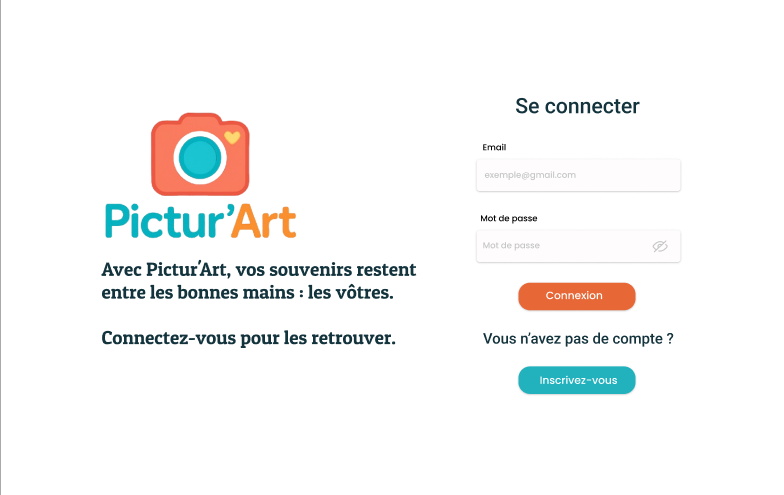

// projet technique · Master 1 · 2025
Pictur'Art
Une application web pour partager photos et vidéos en petit comité, dans des albums privés : entre amis, en famille ou avec son club, sans passer par les réseaux sociaux.
Le projet
Projet technique de Master 1, mené en équipe de quatre. J'ai travaillé sur toutes les couches : l'interface React, l'API Node.js / Express et la base MongoDB. Nous avons d'abord écrit le cahier des charges et les maquettes Figma en juin 2025, puis développé l'application pendant une semaine intensive, en juillet 2025.
Avant de coder, nous avons vérifié le besoin avec un sondage auprès de 15 personnes. 80 % trouvaient l'application utile, et toutes jugeaient la confidentialité des albums importante.
Fonctionnalités
- Inscription, connexion et mot de passe oublié, avec un jeton JWT.
- Albums privés que l'on crée ou que l'on rejoint, et invitation d'amis par e-mail.
- Ajout de photos et de vidéos, et visionneuse pour parcourir un album.
- Commentaires et réactions emoji, une seule réaction par personne et par média.
- Recherche et filtres sur les albums : par date, par créateur et par nom.



Architecture
Une application JavaScript de bout en bout : une interface en React, une API REST en Node.js / Express et une base MongoDB.
- API : un contrôleur par domaine (authentification, groupes, albums, médias, réactions), et un middleware qui vérifie le jeton sur les routes protégées.
- Upload : les fichiers passent par multer, qui filtre le type et la taille. Seul l'auteur d'un média peut le supprimer.
- Mobile : l'interface est responsive et installable comme une application, grâce à un manifest et un service worker (PWA).
- Déploiement : les services tournent dans des conteneurs Docker Compose, sur un VPS.
Conception
Nous avons modélisé les données (MCD, MLD, MPD), écrit les user stories avec leur définition de « terminé », et planifié le projet avec un diagramme de Gantt et un tableau Trello. Le cahier des charges couvre aussi le RGPD : données minimales, mots de passe hachés, droit à l'effacement et aucun cookie de suivi.